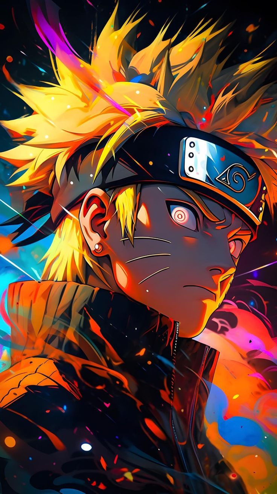

Anime is a Japanese animation style that is produced or influenced by it. It is the Japanese term for cartoon or animation where the Japanese use the word to describe all cartoons irrespective of the nation. However, outside Japan, anime denotes animation movies that come exclusively from Japan, distinguished by blazing graphics, energetic characters, and attractive themes such as sci-fi, romance, and supernatural forces. Therefore, consider this syllogism: all anime shows are cartoons, but not all cartoons are anime.The art style connected with anime is distinct and easily identifiable. Large eyes, untamed hair, lengthy arms and limbs, and other features are certainly known to you. This exaggerated design allows the characters to convey their emotions more freely, which is plentiful in anime.Technical animation methods like dramatic closeups and zooms, vivid lighting, and brilliant colors contribute to the anime’s emotional atmosphere. However, beyond its unusual visual appearance, anime has endeared itself to viewers; thanks to its nuanced characters and compelling plotlines.Anime has been around for almost a century. The first confirmed example, Namakura Gatana, was released in 1917 and lasted only four minutes. It faced highs and lows as it overcame various hurdles domestically and globally.Various artists have pushed the boundaries and stories told with anime as their preferred choice of medium. The genres that fall under this umbrella are as varied as the art form. Many people in the West have a perception of how anime looks.Artistry and styles appear endless, and artistic expression depends on the artists. However, regardless of the different types, one thing is consistent throughout these productions: the process is time-consuming.Technically, anime is identical to the animation produced in Western culture.

The earliest commercial Japanese animation dates to 1917. A characteristic art style emerged in the 1960s with the works of cartoonist Osamu Tezuka and spread in following decades, developing a large domestic audience. Anime is distributed theatrically, through television broadcasts, directly to home media, and over the Internet. In addition to original works, anime are often adaptations of Japanese comics manga, light novels, or video games. It is classified into numerous genres targeting various broad and niche audiences.Anime is a diverse medium with distinctive production methods that have adapted in response to emergent technologies. It combines graphic art, characterization, cinematography, and other forms of imaginative and individualistic techniques.Compared to Western animation, anime production generally focuses less on movement, and more on the detail of settings and use of "camera effects", such as panning, zooming, and angle shots.Diverse art styles are used, and character proportions and features can be quite varied, with a common characteristic feature being large and emotive eyes.In the 1950s, anime studios began appearing across Japan. Hiroshi Takahata bought a studio named Japan Animated Films in 1948, renaming it Tōei Dōga, with an ambition to become "the Disney of the East." While there, Takahata met other animators such as Yasuji Mori, who directed Doodling Kitty, in May 1957.
"Itachi" redirects here. For weasels in Japanese folklore, see Weasel § Japanese superstitions. Itachi Uchiha is a character in the Naruto manga and anime series created by Masashi Kishimoto. Itachi is the older brother of Sasuke Uchiha, and is responsible for killing all the elder members of their clan, sparing only Sasuke. He appears working as a terrorist from the organisation Akatsuki and serves as Sasuke's greatest enemy.During the second part of the manga, Itachi becomes involved in attacks to ninjas possessing tailed-beast creatures (Jinchuriki) until facing Sasuke in a one-on-one battle. Although Itachi perishes during the final duel, it is later revealed that Itachi had a secret reason for assassinating the Uchiha clan. Itachi is a playable character in most of the video games from the series. Itachi's character has been popular with readers of the manga and has been positively received by critics. He is considered by many to be one of the best characters in the series. His appearance as an antagonist has been praised by several writers, although some have considered his initial appearance to be unsurprising. The gradual revelations of his past and its impact on the story has also received positive reception,and his fights were noted to be "one of the best" in the series.Numerous types of merchandise have been released in Itachi's likeness, including keychains, plush dolls and figurines.When Itachi Uchiha is first mentioned by Sasuke Uchiha in the manga, Masashi Kishimoto had not planned out the character's backstory. His only idea he had was to attribute to Itachi some violent action that would have Sasuke wanting to kill him. However, when Itachi was introduced, Kishimoto had the idea to make Itachi Konoha's secret agent who killed his clan under their orders.Itachi was originally conceived as the leader of Konoha's Special Assassination.
Osamu Tezuka is by far the most prolific creators in the entire medium. He has brought many conventions that have laid the foundations for many genres from shonen to seinen. His Disney-esque art style is nothing short of iconic, and his writing has captivated creators of all generations.Tezuka has created iconic series such as Astro Boy, a story about a robotic child who deals with themes regarding robotics and humanity. He has also created darker works like Dororo, which dealt with the recovery of a Ronin who regains his body parts by killing demons. Finally, he talked about the concept of immortality with his ambitious work Phoenix.
Akira Toriyama is one of the most recognizable names in the industry. Thanks to his wonderful work, from Dr. Slump to Dragon Ball, his books have sold millions all over the world. Not only that, but his works have also gotten numerous adaptations from anime and even a few movie works. His art has stuck around in the public subconscious for many decades.A lot of this is thanks to Toriyama's simple yet bold approach to his storytelling and art. While they aren't as complex as what other creators have put out over the years, his charming worlds and recognizable art style have stuck around with fans to this very day. Not only that, but Akira Toriyama has introduced conventions that help influence the shonen industry.
Easily one of the most popular mangakas currently working today, Eiichiro Oda has turned One Piece an iconic series, instantly recognizable worldwide. His cartoony yet heavily detailed art style helped make it recognizable all over the world. His writing and immense worldbuilding have made him legendary to the entire industry.A lot of One Piece's success has to do with Eiichiro Oda's workaholic tendencies since his work output has also made him infamous. Even when he's hospitalized, nothing can stop Oda from making art.